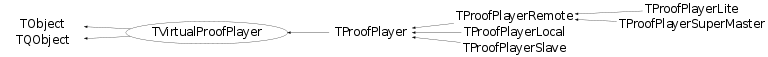

class TVirtualProofPlayer: public TObject, public TQObject
TVirtualProofPlayer Abstract interface for the PROOF player. See the concrete implementations under 'proofplayer' for details.
Function Members (Methods)
This is an abstract class, constructors will not be documented.
Look at the header to check for available constructors.
public:
| virtual | ~TVirtualProofPlayer() |
| void | TObject::AbstractMethod(const char* method) const |
| virtual void | AddEventsProcessed(Long64_t ev) |
| virtual void | AddInput(TObject* inp) |
| virtual void | AddOutput(TList* out) |
| virtual Int_t | AddOutputObject(TObject* obj) |
| virtual void | AddQueryResult(TQueryResult* q) |
| virtual void | TObject::AppendPad(Option_t* option = "") |
| static Bool_t | TQObject::AreAllSignalsBlocked() |
| Bool_t | TQObject::AreSignalsBlocked() const |
| static Bool_t | TQObject::BlockAllSignals(Bool_t b) |
| Bool_t | TQObject::BlockSignals(Bool_t b) |
| virtual void | TObject::Browse(TBrowser* b) |
| virtual void | TQObject::ChangedBy(const char* method)SIGNAL |
| static TClass* | Class() |
| virtual const char* | TObject::ClassName() const |
| virtual void | TObject::Clear(Option_t* = "") |
| virtual void | ClearInput() |
| virtual TObject* | TObject::Clone(const char* newname = "") const |
| void | TQObject::CollectClassSignalLists(TList& list, TClass* cls) |
| virtual Int_t | TObject::Compare(const TObject* obj) const |
| Bool_t | TQObject::Connect(const char* signal, const char* receiver_class, void* receiver, const char* slot) |
| static Bool_t | TQObject::Connect(TQObject* sender, const char* signal, const char* receiver_class, void* receiver, const char* slot) |
| static Bool_t | TQObject::Connect(const char* sender_class, const char* signal, const char* receiver_class, void* receiver, const char* slot) |
| virtual void | TQObject::Connected(const char*) |
| virtual void | TObject::Copy(TObject& object) const |
| static TVirtualProofPlayer* | Create(const char* player, TProof* p, TSocket* s = 0) |
| virtual TDrawFeedback* | CreateDrawFeedback(TProof* p) |
| virtual void | TObject::Delete(Option_t* option = "")MENU |
| virtual void | DeleteDrawFeedback(TDrawFeedback* f) |
| virtual void | TQObject::Destroyed()SIGNAL |
| Bool_t | TQObject::Disconnect(const char* signal = 0, void* receiver = 0, const char* slot = 0) |
| static Bool_t | TQObject::Disconnect(TQObject* sender, const char* signal = 0, void* receiver = 0, const char* slot = 0) |
| static Bool_t | TQObject::Disconnect(const char* class_name, const char* signal, void* receiver = 0, const char* slot = 0) |
| virtual void | TQObject::Disconnected(const char*) |
| virtual Int_t | TObject::DistancetoPrimitive(Int_t px, Int_t py) |
| virtual void | TObject::Draw(Option_t* option = "") |
| virtual void | TObject::DrawClass() constMENU |
| virtual TObject* | TObject::DrawClone(Option_t* option = "") constMENU |
| virtual Long64_t | DrawSelect(TDSet* set, const char* varexp, const char* selection, Option_t* option = "", Long64_t nentries = -1, Long64_t firstentry = 0) |
| virtual void | TObject::Dump() constMENU |
| void | TQObject::Emit(const char* signal) |
| void | TQObject::Emit(const char* signal, Long_t* paramArr) |
| void | TQObject::Emit(const char* signal, const char* params) |
| void | TQObject::Emit(const char* signal, Double_t param) |
| void | TQObject::Emit(const char* signal, Long_t param) |
| void | TQObject::Emit(const char* signal, Long64_t param) |
| void | TQObject::Emit(const char* signal, Bool_t param) |
| void | TQObject::Emit(const char* signal, Char_t param) |
| void | TQObject::Emit(const char* signal, UChar_t param) |
| void | TQObject::Emit(const char* signal, Short_t param) |
| void | TQObject::Emit(const char* signal, UShort_t param) |
| void | TQObject::Emit(const char* signal, Int_t param) |
| void | TQObject::Emit(const char* signal, UInt_t param) |
| void | TQObject::Emit(const char* signal, ULong_t param) |
| void | TQObject::Emit(const char* signal, ULong64_t param) |
| void | TQObject::Emit(const char* signal, Float_t param) |
| void | TQObject::EmitVA(const char* signal, Int_t nargs) |
| void | TQObject::EmitVA(const char* signal, Int_t nargs, va_list va) |
| virtual void | TObject::Error(const char* method, const char* msgfmt) const |
| virtual void | TObject::Execute(const char* method, const char* params, Int_t* error = 0) |
| virtual void | TObject::Execute(TMethod* method, TObjArray* params, Int_t* error = 0) |
| virtual void | TObject::ExecuteEvent(Int_t event, Int_t px, Int_t py) |
| virtual void | TObject::Fatal(const char* method, const char* msgfmt) const |
| virtual void | Feedback(TList* objs)SIGNAL |
| virtual Long64_t | Finalize(TQueryResult* qr) |
| virtual Long64_t | Finalize(Bool_t force = kFALSE, Bool_t sync = kFALSE) |
| virtual TObject* | TObject::FindObject(const char* name) const |
| virtual TObject* | TObject::FindObject(const TObject* obj) const |
| virtual Long64_t | GetCacheSize() |
| virtual TQueryResult* | GetCurrentQuery() const |
| virtual Int_t | GetDrawArgs(const char* var, const char* sel, Option_t* opt, TString& selector, TString& objname) |
| virtual Option_t* | TObject::GetDrawOption() const |
| static Long_t | TObject::GetDtorOnly() |
| virtual Long64_t | GetEventsProcessed() const |
| virtual TVirtualProofPlayer::EExitStatus | GetExitStatus() const |
| virtual const char* | TObject::GetIconName() const |
| virtual TList* | GetInputList() const |
| virtual Int_t | GetLearnEntries() |
| TList* | TQObject::GetListOfClassSignals() const |
| TList* | TQObject::GetListOfConnections() const |
| virtual TList* | GetListOfResults() const |
| TList* | TQObject::GetListOfSignals() const |
| virtual const char* | TObject::GetName() const |
| virtual TDSetElement* | GetNextPacket(TSlave* slave, TMessage* r) |
| virtual char* | TObject::GetObjectInfo(Int_t px, Int_t py) const |
| static Bool_t | TObject::GetObjectStat() |
| virtual Option_t* | TObject::GetOption() const |
| virtual TObject* | GetOutput(const char* name) const |
| virtual TList* | GetOutputList() const |
| virtual TVirtualPacketizer* | GetPacketizer() const |
| virtual TProofProgressStatus* | GetProgressStatus() const |
| virtual TQueryResult* | GetQueryResult(const char* ref) |
| virtual const char* | TObject::GetTitle() const |
| virtual UInt_t | TObject::GetUniqueID() const |
| virtual void | HandleGetTreeHeader(TMessage* mess) |
| virtual void | HandleRecvHisto(TMessage* mess) |
| virtual Bool_t | TObject::HandleTimer(TTimer* timer) |
| virtual Bool_t | TQObject::HasConnection(const char* signal_name) const |
| virtual ULong_t | TObject::Hash() const |
| virtual void | TQObject::HighPriority(const char* signal_name, const char* slot_name = 0) |
| virtual void | TObject::Info(const char* method, const char* msgfmt) const |
| virtual Bool_t | TObject::InheritsFrom(const char* classname) const |
| virtual Bool_t | TObject::InheritsFrom(const TClass* cl) const |
| virtual void | TObject::Inspect() constMENU |
| void | TObject::InvertBit(UInt_t f) |
| virtual TClass* | IsA() const |
| virtual Bool_t | IsClient() const |
| virtual Bool_t | TObject::IsEqual(const TObject* obj) const |
| virtual Bool_t | TObject::IsFolder() const |
| Bool_t | TObject::IsOnHeap() const |
| virtual Bool_t | TObject::IsSortable() const |
| Bool_t | TObject::IsZombie() const |
| static void | TQObject::LoadRQ_OBJECT() |
| virtual void | TQObject::LowPriority(const char* signal_name, const char* slot_name = 0) |
| virtual void | TObject::ls(Option_t* option = "") const |
| void | TObject::MayNotUse(const char* method) const |
| virtual void | MergeOutput() |
| virtual void | TQObject::Message(const char* msg)SIGNAL |
| virtual Bool_t | TObject::Notify() |
| virtual Int_t | TQObject::NumberOfConnections() const |
| virtual Int_t | TQObject::NumberOfSignals() const |
| void | TObject::Obsolete(const char* method, const char* asOfVers, const char* removedFromVers) const |
| static void | TObject::operator delete(void* ptr) |
| static void | TObject::operator delete(void* ptr, void* vp) |
| static void | TObject::operator delete[](void* ptr) |
| static void | TObject::operator delete[](void* ptr, void* vp) |
| void* | TObject::operator new(size_t sz) |
| void* | TObject::operator new(size_t sz, void* vp) |
| void* | TObject::operator new[](size_t sz) |
| void* | TObject::operator new[](size_t sz, void* vp) |
| TObject& | TObject::operator=(const TObject& rhs) |
| virtual void | TObject::Paint(Option_t* option = "") |
| virtual void | TObject::Pop() |
| virtual void | TObject::Print(Option_t* option = "") const |
| virtual Long64_t | Process(TDSet* set, const char* selector, Option_t* option = "", Long64_t nentries = -1, Long64_t firstentry = 0) |
| virtual void | Progress(TProofProgressInfo*)SIGNAL |
| virtual void | Progress(Long64_t total, Long64_t processed)SIGNAL |
| virtual void | Progress(TSlave*, TProofProgressInfo*)SIGNAL |
| virtual void | Progress(TSlave*, Long64_t total, Long64_t processed) |
| virtual void | Progress(Long64_t total, Long64_t processed, Long64_t bytesread, Float_t initTime, Float_t procTime, Float_t evtrti, Float_t mbrti)SIGNAL |
| virtual void | Progress(TSlave*, Long64_t total, Long64_t processed, Long64_t bytesread, Float_t initTime, Float_t procTime, Float_t evtrti, Float_t mbrti)SIGNAL |
| virtual Int_t | TObject::Read(const char* name) |
| virtual void | TObject::RecursiveRemove(TObject* obj) |
| virtual Int_t | ReinitSelector(TQueryResult* qr) |
| virtual void | RemoveQueryResult(const char* ref) |
| void | TObject::ResetBit(UInt_t f) |
| virtual void | RestorePreviousQuery() |
| virtual void | TObject::SaveAs(const char* filename = "", Option_t* option = "") constMENU |
| virtual void | TObject::SavePrimitive(ostream& out, Option_t* option = "") |
| void | TObject::SetBit(UInt_t f) |
| void | TObject::SetBit(UInt_t f, Bool_t set) |
| virtual void | SetCurrentQuery(TQueryResult* q) |
| virtual void | SetDispatchTimer(Bool_t on = kTRUE) |
| virtual void | SetDrawFeedbackOption(TDrawFeedback* f, Option_t* opt) |
| virtual void | TObject::SetDrawOption(Option_t* option = "")MENU |
| static void | TObject::SetDtorOnly(void* obj) |
| virtual void | SetInitTime() |
| virtual void | SetMaxDrawQueries(Int_t max) |
| static void | TObject::SetObjectStat(Bool_t stat) |
| virtual void | SetStopTimer(Bool_t on = kTRUE, Bool_t abort = kFALSE, Int_t timeout = 0) |
| virtual void | TObject::SetUniqueID(UInt_t uid) |
| virtual void | ShowMembers(TMemberInspector& insp) |
| virtual void | StopProcess(Bool_t abort, Int_t timeout = -1) |
| virtual void | StoreFeedback(TObject* slave, TList* out) |
| virtual void | StoreOutput(TList* out) |
| virtual void | Streamer(TBuffer& b) |
| void | StreamerNVirtual(TBuffer& b) |
| virtual void | TObject::SysError(const char* method, const char* msgfmt) const |
| Bool_t | TObject::TestBit(UInt_t f) const |
| Int_t | TObject::TestBits(UInt_t f) const |
| virtual void | UpdateAutoBin(const char* name, Double_t& xmin, Double_t& xmax, Double_t& ymin, Double_t& ymax, Double_t& zmin, Double_t& zmax) |
| virtual void | TObject::UseCurrentStyle() |
| virtual void | TObject::Warning(const char* method, const char* msgfmt) const |
| virtual Int_t | TObject::Write(const char* name = 0, Int_t option = 0, Int_t bufsize = 0) |
| virtual Int_t | TObject::Write(const char* name = 0, Int_t option = 0, Int_t bufsize = 0) const |
protected:
| static Int_t | TQObject::CheckConnectArgs(TQObject* sender, TClass* sender_class, const char* signal, TClass* receiver_class, const char* slot) |
| static Bool_t | TQObject::ConnectToClass(TQObject* sender, const char* signal, TClass* receiver_class, void* receiver, const char* slot) |
| static Bool_t | TQObject::ConnectToClass(const char* sender_class, const char* signal, TClass* receiver_class, void* receiver, const char* slot) |
| virtual void | TObject::DoError(int level, const char* location, const char* fmt, va_list va) const |
| virtual void* | TQObject::GetSender() |
| virtual const char* | TQObject::GetSenderClassName() const |
| void | TObject::MakeZombie() |
Data Members
public:
| enum EStatusBits { | kIsSubmerger | |
| }; | ||
| enum EExitStatus { | kFinished | |
| kStopped | ||
| kAborted | ||
| }; | ||
| enum TObject::EStatusBits { | kCanDelete | |
| kMustCleanup | ||
| kObjInCanvas | ||
| kIsReferenced | ||
| kHasUUID | ||
| kCannotPick | ||
| kNoContextMenu | ||
| kInvalidObject | ||
| }; | ||
| enum TObject::[unnamed] { | kIsOnHeap | |
| kNotDeleted | ||
| kZombie | ||
| kBitMask | ||
| kSingleKey | ||
| kOverwrite | ||
| kWriteDelete | ||
| }; |
protected:
| TList* | TQObject::fListOfConnections | ! list of connections to this object |
| TList* | TQObject::fListOfSignals | ! list of signals from this object |
| Bool_t | TQObject::fSignalsBlocked | ! flag used for suppression of signals |
| static Bool_t | TQObject::fgAllSignalsBlocked | flag used for suppression of all signals |
Class Charts
{kind=link}
{kind=link}
{kind=link}
{kind=link}

Function documentation
Long64_t Process(TDSet* set, const char* selector, Option_t* option = "", Long64_t nentries = -1, Long64_t firstentry = 0)
Long64_t Finalize(TQueryResult* qr)
Long64_t DrawSelect(TDSet* set, const char* varexp, const char* selection, Option_t* option = "", Long64_t nentries = -1, Long64_t firstentry = 0)
void HandleGetTreeHeader(TMessage* mess)
void HandleRecvHisto(TMessage* mess)
void StopProcess(Bool_t abort, Int_t timeout = -1)
void ClearInput()
TList * GetOutputList() const
TList * GetInputList() const
TList * GetListOfResults() const
void AddQueryResult(TQueryResult* q)
TQueryResult * GetCurrentQuery() const
TQueryResult * GetQueryResult(const char* ref)
void RemoveQueryResult(const char* ref)
void SetCurrentQuery(TQueryResult* q)
void SetMaxDrawQueries(Int_t max)
void RestorePreviousQuery()
Int_t AddOutputObject(TObject* obj)
void StoreOutput(TList* out)
void StoreFeedback(TObject* slave, TList* out)
void Progress(Long64_t total, Long64_t processed, Long64_t bytesread, Float_t initTime, Float_t procTime, Float_t evtrti, Float_t mbrti)
void Progress(TProofProgressInfo* )
void Progress(TSlave* , TProofProgressInfo* )
void SetDrawFeedbackOption(TDrawFeedback* f, Option_t* opt)
void DeleteDrawFeedback(TDrawFeedback* f)
TDSetElement * GetNextPacket(TSlave* slave, TMessage* r)
void UpdateAutoBin(const char* name, Double_t& xmin, Double_t& xmax, Double_t& ymin, Double_t& ymax, Double_t& zmin, Double_t& zmax)
EExitStatus GetExitStatus() const
Long64_t GetEventsProcessed() const
void AddEventsProcessed(Long64_t ev)
TProofProgressStatus* GetProgressStatus() const
void SetDispatchTimer(Bool_t on = kTRUE)
TVirtualProofPlayer * Create(const char* player, TProof* p, TSocket* s = 0)